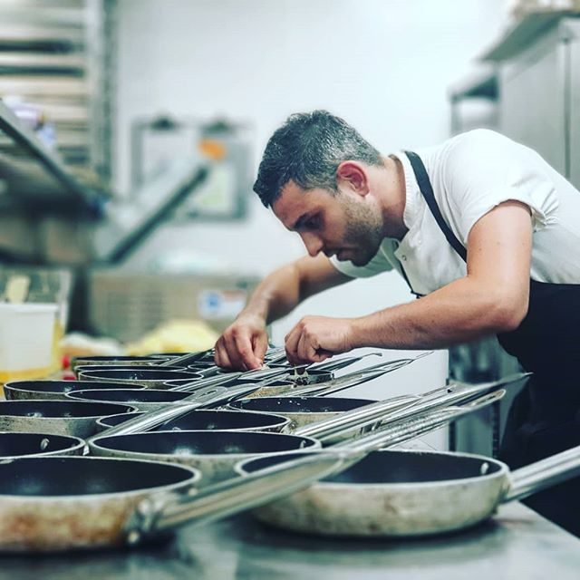

Francesco Liverano - Private Chef
London UK
Early life
Born in Puglia, south Italy's region. Moved to London at age 18, Francesco discovered his passion for cuisines. His inspiration comes from his travels around the globe , whether he’s eating out, reading cookbooks, or browsing produce at the market. An ambitious cook, he enjoys the challenge of creating dishes which will leave a lasting impression.
Experience
Francesco is working at prestigious member clubs such as the Soho House 76 Dean Street, Soho, London. Chef Liverano has lived in London for the past 7 years where he has worked for many high restaurant of Soho House company. Starting from the bottom, Francesco made his way up becoming one of most prestigious Chef in UK.
Dedication
Francesco is dedicated to sharing his passion for good food and inspiring others by running bespoke event catering and private fine dining experiences. From selecting the finest ingredients, to ensuring impeccable presentation, Francesco maintains careful attention to detail at every step.
Our Service
The service we provide is always orientated around our clients schedule or workload. We provide a bespoke, tailored chef service which is geared towards giving our clients the best possible fine dining experience. Our typical Private Chef service involves full-service dining experiences per day i.e. breakfast, lunch and dinner . But also, our service will cover your specific needs and desires.

"Creative, original ideas, plans, products or methods, well-attuned to the needs and capabilities of the organization, and producing clear benefits."
John Smith
"Polite, courteous, respectful and charming at all times and in all situations, without being obsequious. Unfailingly courteous even when dealing with a difficult person or situation."
Adam Sander
"Great attention to detail. They always presented work properly checked and completely free of error."
Melissa Watford

Experimental
Try the latest creations from Francesco’s kitchen